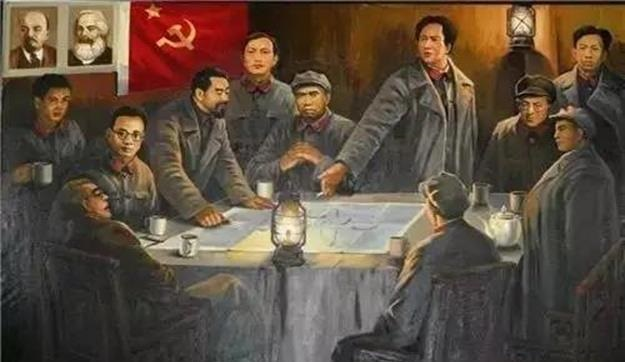

从南湖红船到开国大典，从长征精神到改革开放，中国红色文化承载着中国共产党百年奋斗的光辉历程，记录着中华民族从站起来、富起来到强起来的伟大飞跃。
点击地图上的标记点，了解每个历史节点的详细故事。拖动时间轴可按时间筛选事件。
拖动时间轴滑块，按时间顺序回顾中国共产党的光辉历程。
通过交互式游戏，深度感悟中国红色文化，做出你的历史抉择。

通过8个历史场景的交互式决策模拟，深度体验遵义会议的全过程。 做出你的历史抉择，解锁六大红色精神成就，感受实事求是、独立自主、 团结协作的遵义会议精神。